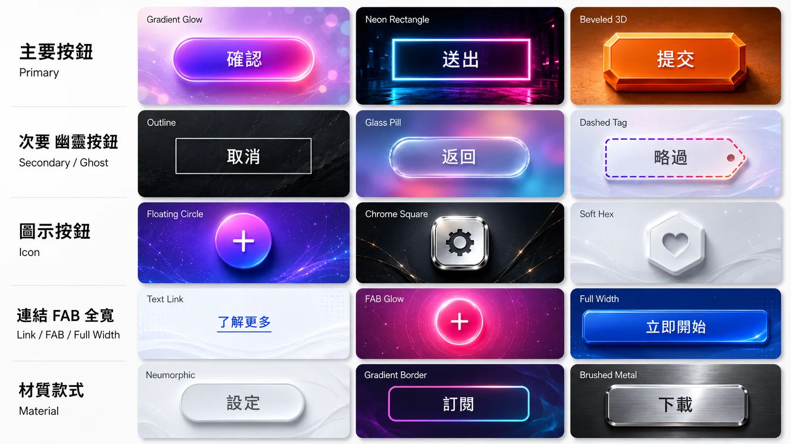
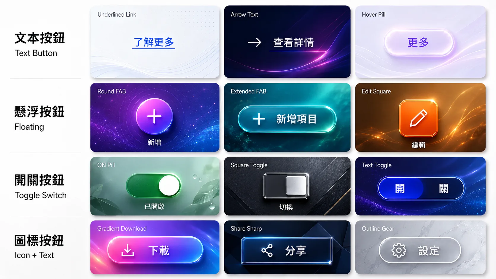
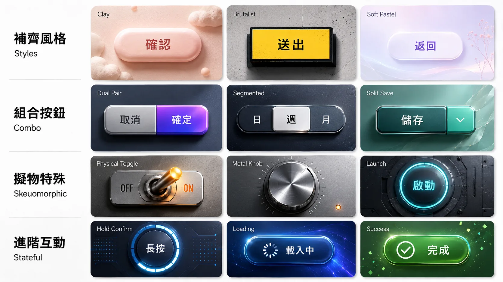

挑好哪個款式,直接用「組件 + 款式名」告訴我(例:「按鈕 漸層描邊」「開關 霓虹方形」「輸入框 標籤輸入」),我就照著刻進你的網頁。點任一張圖可放大看細節。
UI 詞典 · 何時用什麼組件
16 類
主要按鈕 Primary
何時用：提交、確認、下一步。整頁最重要的動作通常只留一個。
操作
次要按鈕 Secondary / Ghost
何時用：取消、返回、輔助操作,跟主要按鈕並排時讓位。
操作
圖示按鈕 Icon Button
何時用：工具列、卡片角落、密集操作。一定要有 tooltip 或明確語境。
操作
文字輸入框 Text Field
何時用：表單輸入。要同時想 placeholder、focus、錯誤、成功狀態。
輸入
搜尋框 Search
何時用：清單很長、需要即時找到項目時。可加建議、歷史、篩選。
輸入
Checkbox / Radio
何時用：Checkbox 多選或同意條款;Radio 是一組只能選一個。
輸入
Switch / Toggle
何時用：設定頁即時開關,如深色模式、通知、同步。
輸入
Modal / Dialog
何時用：需要使用者做決定,如刪除確認、必填表單、重要阻斷。
浮層
Bottom Sheet / Drawer
何時用：手機底部選單、側邊篩選、次層導覽;桌面常改成 Modal 或側欄。
浮層
Popover / Tooltip
何時用：小型操作選單或補充說明。手機沒有 hover,Tooltip 要慎用。
浮層
Toast / Alert
何時用：已儲存、錯誤、警告、系統回饋。Toast 輕量,Alert 比較需要注意。
反饋
Progress / Skeleton
何時用：知道進度用 Progress;不知道多久用 Spinner 或 Skeleton。
反饋
Tabs / Segmented
何時用：同頁切換分類。Tabs 偏內容分區,Segmented 偏模式或狀態切換。
導航
Pagination / Breadcrumb
何時用：分頁處理長清單;麵包屑顯示層級路徑。
導航
Badge / Chip / Tag
何時用：狀態、分類、數量提醒。Badge 偏數量,Chip/Tag 偏分類或狀態。
內容
Avatar / Rating / List
何時用：人員識別、評價分數、條列資料。這些通常是內容密度的基礎組件。
內容
按鈕 Button
3 張 · 40+ 款



對話框 Dialog / Modal
12 種用途 × 冷門風格
風格款式 · 進度 / 導覽 / 搜尋 / CTA
12 款形態 × 跨類風格